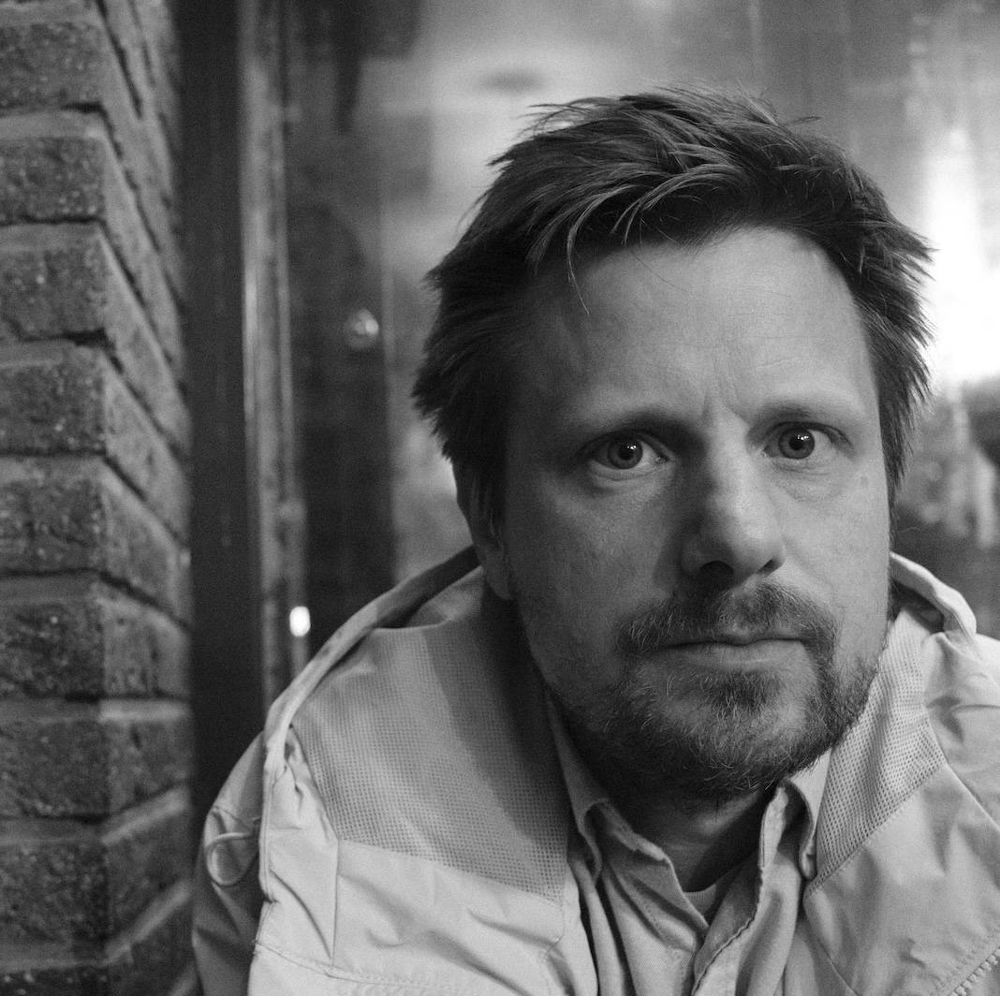

Product thinking
Turning complex customer problems into clear product choices, and helping teams move from an idea to something people can actually use.
Product-minded builder with a soft spot for companies, teams and products that make complex things feel simple.
My career started in finance and later took me through Engagor, PieSync and HubSpot, teaching me plenty about launching products in growing teams. Outside of work, I enjoy music and photography and have my hands full raising three kids.

A career shaped by growing products, evolving teams and companies becoming part of something bigger.
I began my career where finance, software and large-scale operations meet. Fortis became BNP Paribas Fortis along the way — a first acquisition story I can’t claim much credit for.
At Engagor, I worked across customers, solutions and the product itself. Engagor was acquired by Clarabridge, which later became part of Qualtrics.
PieSync’s 2019 acquisition brought me to HubSpot. I stayed for the next chapter, moving from Solutions Engineer to GTM Specialist, Product Manager and Senior Product Manager — deepening my craft as an individual contributor inside a global product team.
How I work
I tend to work where those worlds overlap — helping each understand the others and turning complexity into something teams can act on.
Turning complex customer problems into clear product choices, and helping teams move from an idea to something people can actually use.
Comfortable between customers, product and engineering — especially where APIs, integrations, CRM and customer data meet.
Bridging what a product can do, what customers need and what a commercial team can successfully bring to market.
Languages hold the keys to other cultures. They help me understand different perspectives and make ideas travel across borders.
Photography
I shoot with a Fujifilm X-T30 III but I like to pair it with some old Nikon lenses.
Contact
You can find me on LinkedIn and Bluesky. Feel free to reach out about product, technology, photography or anything worth exploring.